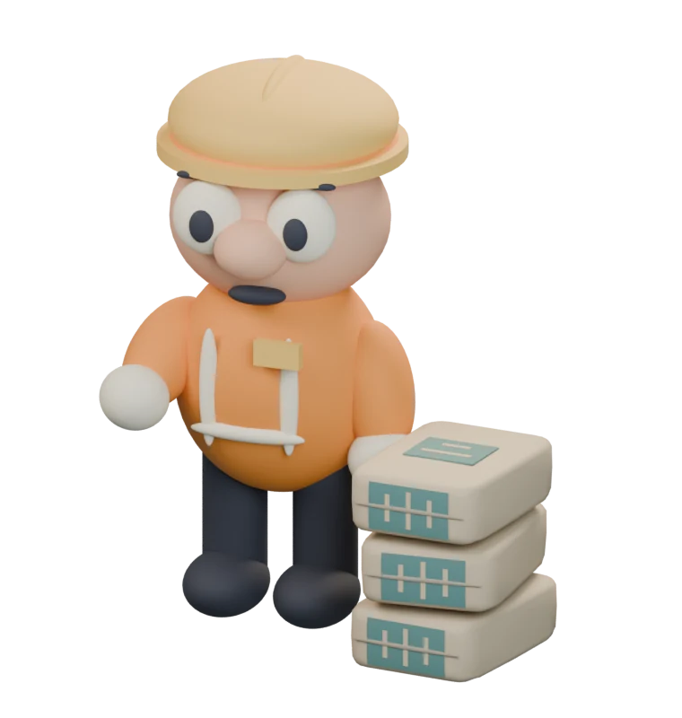
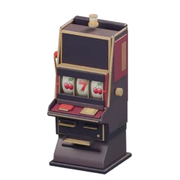
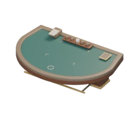
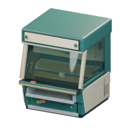

大厅收益平衡
赚钱效率差异
制作过程中发现，有些玩法赚得特别快，有些很慢，有些甚至很难赚到钱。我担心这样下去，玩家只会选赚钱最快的，其他玩法做了也没人愿意玩。

设计初衷
我想让大厅里有很多种赚钱方式。有自己就能玩的，也有和朋友一起玩的，还有股票、拳赛这种需要等一段时间才有收益的。
单人玩法里，我放了二十一点、老虎机、推币机和搬水泥，希望玩家可以按自己的喜好和情况来选。
四种单人玩法
我想让认真玩的玩家，长期收益大致接近搬水泥，同时保留每种玩法的区别。
- 搬水泥
- 不用本金，花时间跑一趟。

老虎机- 操作简单，主要看运气，偶尔能中一笔大的。

二十一点- 要自己判断什么时候要牌、停牌和加倍。

推币机- 观察投币口和币堆，找合适的时机投币。
收益对照
| 玩法 | 参考净收益 | 数据依据 |
|---|---|---|
| 搬水泥 | 约 49金币／分钟（步行折算） | 当前大厅自动实走 3 次，平均往返约 61.3 秒，每袋 50 金币。无移速饰品、无人干扰，往返均步行，不含取货、交货停留。 |
| 老虎机 | 约 52.5金币／分钟 | 理论平均值。资金足够，每 4 秒完成一次。 |
| 二十一点 | 约 49.59金币／分钟 | 规则模拟。按可见牌决策，每局投入 50 金币，模拟 20,000 局。 |
| 推币机 | 10 分钟 +830金币 | 单次物理测试，在投币口到中间时投币；停止投币后再等 12 秒统计落币。 |
这些数据来自不同的检查方式，目前用来观察收益差异。搬水泥空手回程可以冲刺，本次未使用；推币机那次测试前 3 分钟仍亏了 245 金币，不能用整段结果保证短时间收益。具体条件和调整过程在下面。
收益调整
老虎机
一开始，我想做出玩老虎机时上头的感觉：输了钱，还想再试几次赢回来。返还率当时设成了 87.5%，偶尔能中奖，但长期平均下来会亏钱。
后来我才意识到，自己只想到了玩家输钱的场面，却没想清楚他们为什么还愿意继续玩。大厅里还有其他赚钱方式，如果老虎机越玩越亏，玩家很可能就去玩别的了。
后来，我把老虎机改成了长期平均有收益，短时间内仍可能亏钱。保留输钱和中奖的起伏，让它也能成为玩家赚钱的一种选择。
我提高了返本的概率，只保留 50 和 100 两档投入，默认用 50。两档的理论平均净收益都是每次 3.5 金币；选 100 的输赢起伏更大，但平均赚的钱不会更多。
| 投入 | 调整前 | 调整后 |
|---|---|---|
| 50 金币 | −6.25 | +3.50 |
| 100 金币 | −12.50 | +3.50 |
按资金足够、每 4 秒完成一次计算，理论上平均每分钟净赚 52.5 金币。短时间内仍可能一直亏钱，这个数不代表每玩一分钟都能拿到这么多。
保留的部分
每次仍然独立随机，不会因为玩家钱少或连续输了就补偿。最高返还 10 倍的概率保留为 0.5%，也没有保底次数。
二十一点
怎么改
我保留了原来的牌局规则，在赢的时候额外给 25 金币。平局、输掉或爆牌都没有这笔奖励。加倍时，正常输赢按加倍后的投入算，额外奖励仍然是 25。
比如投入 50 金币，普通获胜会到账 125，扣掉投入就是净赚 75。玩家还是要判断怎么打，奖励也不会随着投入一起翻倍。
用不同打法检查收益
为了看看操作有没有影响，我用游戏里的实际规则，分别模拟了三种打法。
| 打法 | 平均净收益 （金币／分钟） |
|---|---|
| 根据可见牌决定要牌、停牌或加倍 | +49.59 |
| 不到 17 点就要牌 | +32.46 |
| 总是停牌 | +6.34 |
表中每种打法模拟 20,000 局，假设每次思考 2 秒，并计入发牌和结算等待。每局补足本金，方便比较打法；这是规则模拟，还不能代表玩家带着有限的钱玩一整局的表现。
这组结果里，怎么打仍然会影响收益。投入更高也不一定赚得更多：同一种按可见牌判断的打法，投入 100 和 200 时，分别约为每分钟 46.70 和 40.92 金币。
推币机
一开始很难赚到钱
原来投一次要 20 金币，出口有坡。按投币口到中间再投的方式，连续测试 4 分钟，最后净亏 1,260 金币，中央的币塔也没有推下来。
先让币能被推下来
我把出口改平，加宽承币面和出口，补齐靠近推板的币堆，也减轻了币塔的重量和摩擦。硬币仍然要从正面出口掉下来才会到账，从侧面掉下去就损失了。
这时先试了每次投入 10 金币。掉币改善后又赚得太快，所以最后改成每次 15，普通币仍返还 20，特殊币返还 100。
| 版本 | 投币时间 | 净收益 （金币） |
|---|---|---|
| 原来：20 金币，有坡出口 | 4 分钟 | −1,260 |
| 尝试：10 金币，改平出口等调整 | 10 分钟 | +2,110 |
| 采用：15 金币，保留物理调整 | 10 分钟 | +830 |
每次停止投币后，都再等 12 秒统计落币。旧版和新版的测试时长不同；出口、币堆和成本也一起改过，不能把改善全算在出口改平这一项上。
保留观察和操作的区别
最后的 15 金币版本，中间再投的那次测试，10 分钟净赚 830；不看位置连续投的那次，净亏 1,610。
我接受不看时机就一直投会亏钱。这个玩法本来就想让玩家认真观察再投，不打算通过暗中补钱，保证每个人都能赚到。
这些是调用游戏实际物理的自动操作测试，每种打法只有一次长测。中间再投的那次，前 3 分钟也还亏了 245 金币，不能用 10 分钟的结果保证短时间收益。